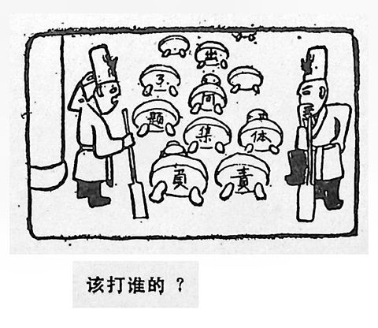
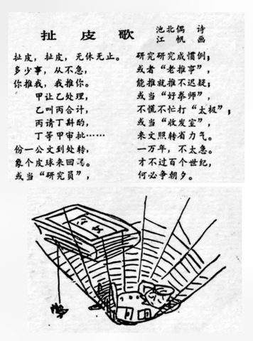
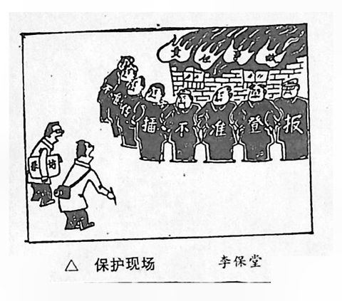

Passing the buck 11
-
 谁说我不在前进？ · Who Says I'm Not Moving Forward?
谁说我不在前进？ · Who Says I'm Not Moving Forward?
Hao Suping 郝苏平. Renshi (Personnel), 1986 no. 3 (whole no. 6), p. 39. -
 上下左右 · Up, Down, Left, Right
上下左右 · Up, Down, Left, Right
Wang Yisheng 王益生. Renshi (Personnel), 1986 no. 5 (whole no. 8), p. 45. -

该打谁的？ · Whose Should We Beat?
Unattributed. Renshi (Personnel), 1987 no. 2 (whole no. 17), inside back cover. -
 失火之后 · After the Fire
失火之后 · After the Fire
Wang Daquan 王大全. Renshi (Personnel), 1987 no. 7 (whole no. 22), p. 44. -
 救生圈 · Life Buoy
救生圈 · Life Buoy
Wang Xiaogen 王小根. Renshi (Personnel), 1988 no. 1 (whole no. 28), inside back cover. -
 某办公室即景 · A Scene in a Certain Office
某办公室即景 · A Scene in a Certain Office
Drawn by Jiang Peifeng 江沛丰; poem by Ma Liang 马良. Renshi (Personnel), 1988 no. 4 (whole no. 31), p. 48. -

扯皮歌 · Song of Passing the Buck
Drawn by Jiang Fan 江帆; poem by Chi Beiou 池北偶. Renshi (Personnel), 1988 no. 5 (whole no. 32), inside back cover. -
 无题 · Untitled (“Catching mice isn't in the job responsibility system”)
无题 · Untitled (“Catching mice isn't in the job responsibility system”)
Sun Xiaoming 孙小鸣. Renshi (Personnel), 1988 no. 8 (whole no. 35), p. 37. -

保护现场 · Protecting the Scene
Li Baotang 李保堂. Renshi (Personnel), 1988 no. 12 (whole no. 39), inside back cover. -
 杜甫告状（题图） · Du Fu Files a Complaint (title drawing)
杜甫告状（题图） · Du Fu Files a Complaint (title drawing)
Unattributed. Renshi (Personnel), 1990 no. 1 (whole no. 52), p. 38. -
 并非讽刺僧人 · Not a Satire on Monks
并非讽刺僧人 · Not a Satire on Monks
Wang Yan 王燕. Renshi (Personnel), 1990 no. 8 (whole no. 59), inside back cover.